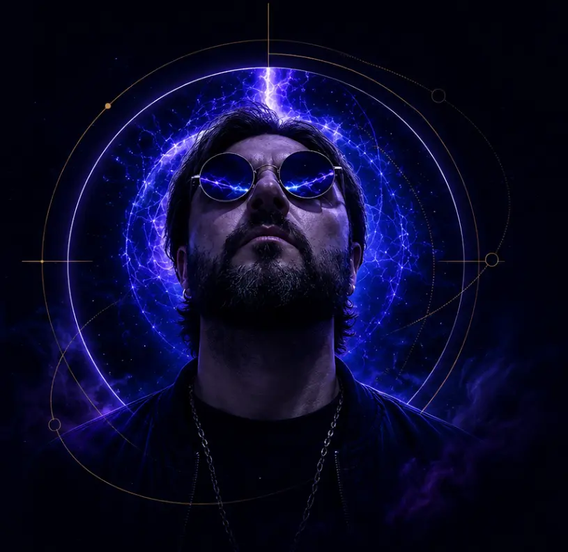

002
002
FRÉQUENCE_02
« Plus je comprends, plus je prends de l'âge. Conscience s'élève, au-delà l'espace. »
TOUT LE MONDE ENTEND LA MÊME MUSIQUE.
MAIS CERTAINES PHRASES SEMBLENT ARRIVER EXACTEMENT AU MOMENT OÙ ELLES DEVAIENT ARRIVER.
Chaque morceau est un fragment reçu, transformé, puis retransmis. Il ne demande pas à être compris immédiatement.
002
« Plus je comprends, plus je prends de l'âge. Conscience s'élève, au-delà l'espace. »
 001
001
« Les murmures dans ma nuque m'indiquent le chemin cosmique. »
Le prochain fragment existe déjà quelque part. Il n'a simplement pas encore traversé le bruit.
Déplace le curseur. Les mots changent avant que leur sens ne se stabilise.
LE CORPS SAIT AVANT LES MOTS.

C'est un point de bascule.
À la frontière entre écriture urbaine, symbolisme et imaginaire cosmique, VRTG transforme les perceptions, les synchronicités et les fragments de réalité en transmissions sonores.
Le vertige n'est pas la chute. C'est le moment où une autre lecture du réel devient possible.
Un courriel seulement lorsque quelque chose mérite de traverser le bruit.